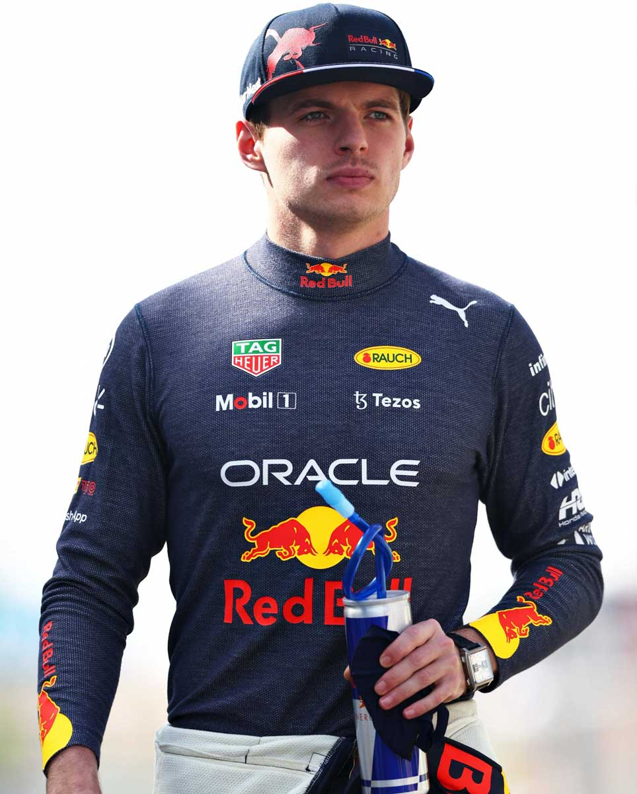

LOS EQUIPOS Y SUS PILOTOS


Ferrari
La primera participación de Ferrari en Fórmula 1 fue en el Gran Premio de Mónaco de 1950. La escuderia italiana es el equipo activo más antiguo del campeonato, y es el que ha conseguido más victorias, Campeonatos de Pilotos (15) y Campeonatos de Constructores (16).
Charles Leclerc
#16
Monegasco
24 Años
17 Podios
4 Victorias
13 Poles
Carlos Sainz
#55
Español
27 Años
9 Podios
0 Victorias
0 Poles
Red Bull
Red Bull Racing es una escudería austriaca de Fórmula 1 con base en Milton Keynes (Inglaterra), propiedad de la empresa de bebidas energéticas Red Bull. Cuenta con cinco Campeonatos de Pilotos (cuatro de Sebastian Vettel y uno de Max Verstappen) y cuatro Campeonatos de Constructores.

Max Verstappen
#1
Holandes
24 Años
64 Podios
24 Victorias
14 Poles
Sergio Perez
#11
Mexicano
32 Años
18 Podios
2 Victorias
1 Pole
Mercedes
Participó inicialmente como constructor en Fórmula 1 en 1954 y 1955, y volvió a hacerlo desde 2010 hasta la actualidad. El equipo alemán ganó ocho Campeonatos de Constructores de forma consecutiva (de 2014 a 2021). Es la tercera escudería que posee más Campeonatos de Pilotos, con nueve.

Lewis Hamilton
#44
Inglés
37 Años
183 Podios
103 Victorias
103 Poles

George Russell
#63
Inglés
24 Años
3 Podios
0 Victorias
0 Poles
McLaren
Es una escudería británica de automovilismo con sede en Woking (Surrey, Inglaterra), fundada en 1963 por Bruce McLaren. A lo largo de los años ha obtenido ocho Campeonatos de Constructores y doce Campeonatos de Pilotos.

Daniel Ricciardo
#3
Australiano
33 Años
32 Podios
8 Victorias
3 Poles
Lando Norris
#4
Inglés
22 Años
6 Podios
0 Victorias
1 Pole
AlphaTauri
Scuderia AlphaTauri es una escudería italiana de Fórmula 1 (originalmente llamada Toro Rosso), propiedad de la empresa Red Bull. El constructor largó 268 carreras, logrando tan solo 3 victorias, una en 2008 y dos en 2019.

Pierre Gasly
#10
Francés
26 Años
3 Podios
1 Victoria
0 Poles
Yuki Tsunoda
#22
Japonés
22 Años
0 Podios
0 Victorias
0 Poles
Alpine
Alpine F1 Team es una escudería francesa de Fórmula 1 con sede en Reino Unido y propiedad del Grupo Renault, que hizo su debut en la temporada 2021. Reemplazó a Renault para promocionar a Automobiles Alpine. La automotriz Renault ha participado en la Fórmula 1 en los años 1977-1985, 2002-2011 y 2016-actualidad.
Fernando Alonso
#14
Español
40 Años
98 Podios
32 Victorias
22 Poles
Esteban Ocon
#31
Francés
25 Años
2 Podios
1 Victoria
0 Poles
Aston Martin
Aston Martin es una escudería británica de Fórmula 1 que hizo su debut en el año 1959, retirandose al terminar el campeonato de 1960. A finales de 2020 regresó a la F1 luego de 60 años de ausencia, obteniendo un podio esa misma temporada.

Sebastian Vettel
#5
Alemán
34 Años
122 Podios
53 Victorias
57 Poles
Lance Stroll
#18
Canadiense
23 Años
3 Podios
0 Victorias
1 Pole
Alfa Romeo
La escuderia italiana participó en los campeonatos de las temporadas 1950, 1951, 1979-1985 y 2019-actualidad. Cuentan con 10 victorias y 2 Campeonatos de Pilotos, siendo uno de ellos logrado por el argentino Juan Manuel Fangio.

Valtteri Bottas
#77
Finlandés
32 Años
67 Podios
10 Victorias
20 Poles